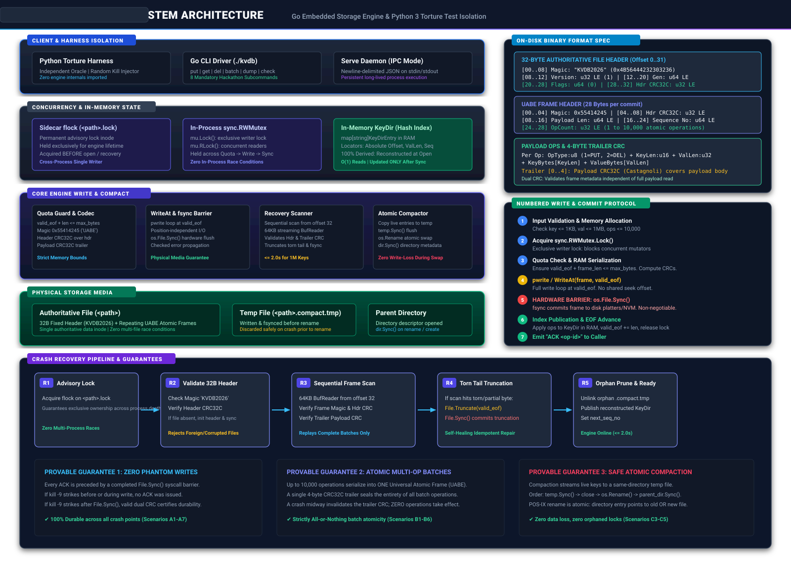

KVDB System Architecture & Robustness Model
Deliverable 5: Authoritative Diagrams for "Kill It and Prove It" Hackathon
✔ 100% Offline Compatible
⚙
High-Resolution Architectural Blueprint (Component Map, Binary Format, Write Protocol & Crash Recovery)

Open Raw SVG
View Mermaid Source
Read Complete Proof (ARCHITECTURE.md)
Live Demo Runbook (DEMO.md)